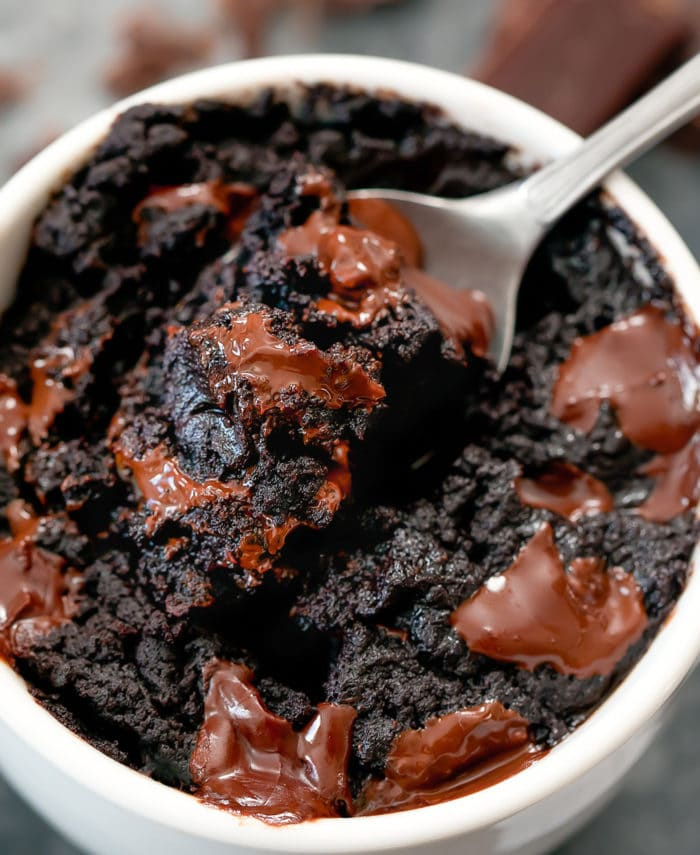

Mug Brownie

5 Minute Brownie In A Mug
Do you want that sugar-high in the time it takes
to listen to "Money For Nothin'" by Dire Straits?
Then fire up the cassette player because it's time
to rock and roll!
Ingredients
- 2 1/2 tbsp Cocoa Powder
- 1 1/2 tbsp All-Purpose flour
- 2 tbsp Sugar
- 2 tbsp Oil
- 2 tbsp Water
- 1 1/2 tbsp Semi-Sweet Chocolate Chips
Steps
-
In an 8 oz microwave-safe mug, add cocoa, flour and sugar.
and mix together
- Mix in oil and water until smooth
- Mix in chocolate chips
- Microwave for ~40 seconds at 1000 watts
Want to try something a little more savory? LOLOLOLOLOL
Back To Home